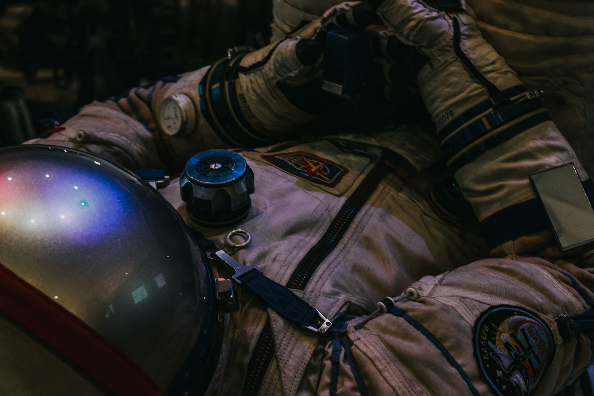

1957
스푸트니크 1호 발사 – 인류 최초 인공위성
The Road to the Unknown.
광활한 우주를 향한 인류의 끊임없는 도전과 역사적인 순간들을 되돌아봅니다.
스푸트니크 1호 발사 – 인류 최초 인공위성
유리 가가린 – 최초의 유인 우주비행
아폴로 11호 – 인류 첫 달 착륙
국제우주정거장(ISS) 건설 시작
아르테미스 계획 – 인류의 달 복귀
지금 이 순간에도 발전하고 있는 놀라운 우주 기술과 혁신적인 프로젝트들을 만나보세요.
인류의 우주 탐사는 멈추지 않을 것입니다. 다음은 다가올 미래의 탐사 프로젝트와 기술들입니다.
인류의 새로운 보금자리를 건설합니다.
목성의 위성 유로파의 생명체 탐사.
태양계를 넘어 새로운 별을 향한 여정.
C우주로 가는 새로운 고속도로 건설.
생명체가 살 수 있는 행성 발견 및 이주.